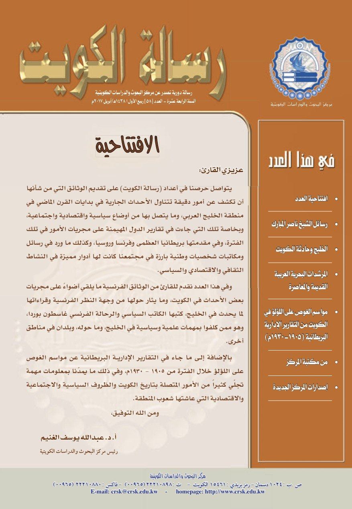
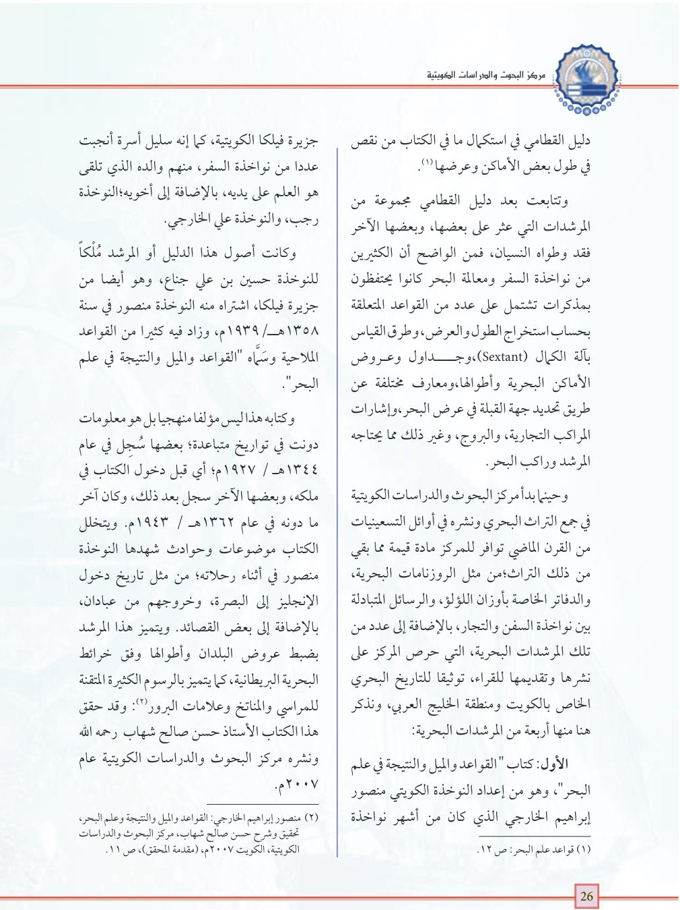

أبريل ٢٠١٧ · صفحات من مجلة رسالة الكويت، العدد ٥٨، ربيع الأول ١٤٣٨هـ (أبريل ٢٠١٧م)، مركز البحوث والدراسات الكويتية، «المرشدات البحرية العربية القديمة والمعاصرة»، ص ١٦ و٢٤ إلى ٢٦
المرشدات البحرية العربية القديمة والمعاصرة: دليل المحتار لعيسى القطامي
ما هي
عرض للمرشدات البحرية العربية. تذكر الصفحة ٢٤ أن عيسى القطامي أورد في مرشده الملاحي رباعية لباطايع لم ترد في مخطوطات منظومته. وتترجم الصفحة ٢٥ له: ولد في الكويت عام ١٨٧٠م، وبعد أن ختم القرآن وتعلم القراءة والكتابة سافر نحو سنتين مع خاله النوخذة ثنيان الغانم ثم مع خاله النوخذة إبراهيم الغانم نحو ثلاث سنين بين سواحل الهند وشرقي أفريقية، ثم عمل معلما يحدد مواقع السفينة الفلكية سنتين مع أحد النواخذة المعروفين، ثم أصبح ربانا ومعلما في آن واحد «وهذه الرتبة الجامعة هي التي تميز بين الربابنة الكبار». وأنجز كتابه دليل المحتار عام ١٣٣٤هـ (١٩١٥م) كما يدل تاريخه بحساب الجمل، وطبعه بمطبعة دار السلام ببغداد عام ١٩٢٤م، فهو أول مرشد بحري يطبعه مؤلفه. وتذكر الصفحة ٢٦ أن حسن صالح شهاب استعان بجداول الطول والعرض في دليل القطامي لاستكمال مرشد الغانم، وأن مرشدات كثيرة تتابعت «بعد دليل القطامي».
أهميتها
ما يذكره مركز البحوث والدراسات الكويتية عن تدرج عيسى ورتبته وتاريخي تأليف دليل المحتار وطبعته الأولى.
صور الصفحات




أسماء أخرى
المصادر
رسالة الكويت، العدد ٥٨، ربيع الأول ١٤٣٨هـ (أبريل ٢٠١٧م)، مركز البحوث والدراسات الكويتية، ص ١٦ و٢٤ إلى ٢٦
كيف كُتب هذا النص: يبدأ المقال في الصفحة ١٦ دون اسم كاتب. وتاريخ العدد كما طبع في تذييل الصفحة، مع أن ربيع الأول ١٤٣٨هـ وافق ديسمبر ٢٠١٦. والصفحات ١٧ إلى ٢٣ و٢٧ إلى ٣٠ لا تذكر العائلة فلم تدرج.
افتح في الموقع التفاعلي